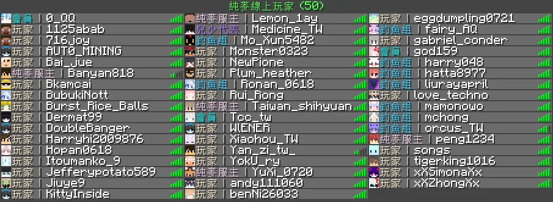

海風歷史館
2023
創立年份（純麥）
290+
更新次數
50+
活動舉辦
500+
公告發佈
🌾 前傳 — 純麥時期（2023~2024）
2023.10.21
純麥伺服器誕生
由 cry（路人甲）創立 Discord 群組並擔任純麥服主。一個小型 Minecraft 生存伺服器就此起步，版本 1.20.x。這是純麥與海風故事的起點。
里程碑
2023.10.25
神焰加入管理團隊
tstw5306（神焰）被 cry 招為管理員，開始了純麥伺服器的管理與技術改革。
里程碑
2023.11.08
防盜系統上線
導入查詢系統（/co i），玩家可以查詢誰破壞了什麼、誰拿了什麼。這是純麥第一個管理工具。
更新
2023.12.09
伺服器形象建立
新增 Discord 橫幅、Minecraft 伺服器圖標。IP 正式訂為 chunmai.mcs.tw，伺服器開始有正式的品牌識別。
更新
2023.12.22
傳送系統問世
/pw 傳送點系統正式啟用，玩家終於可以自由設定與分享傳送點。12/24 /slime 史萊姆區塊查詢也同步上線。
更新
2023.12.27
線上商城系統
純麥建立線上商城，每天晚上 8 點刷新滿級附魔書和修補書。商業化嘗試正式開始。
更新
2024.01.01
2024 新年
跨年夜神焰在公告頻道留下：「雖然開服沒有很久，服務器也還沒完善，我還是會當純麥的管理員的大家放心」，並祝大家新年快樂。團隊的凝聚力在溫暖中鞏固。
事件
2024.01.14
規則初版與社群指南
由石頭（lapis.regnate）、神焰（tstw5306）、td 共同編列第一版伺服器規則與帳號處理格式，建立社群指南頻道。伺服器從「隨便玩」走向「有規矩」。
更新
2024.01.24
二月經費危機
cry 宣布「伺服器沒錢付託管了，2 月有可能就要死了」。管理員緊急發起贊助募款，玩家面臨「忍耐 18 天」或「直接贊助」的抉擇。這是純麥第一次生存危機。
事件
2024.01.31
春節活動
春節活動開始。cry 用「新年快乐！祝你们家庭幸福美满，金玉满堂……」等百字祝福刷屏，被玩家笑稱「你他娘真是人才」。純麥的歡樂日常。
事件
2024.02.09
託管危機
資金不足更換為 kiwisever 託管（IP: chunmei.kwserver.xyz），同時實施圖書管理員村民限制。4 天後因玩家抗議，緊急換回 icehost，恢復 chunmai.mcs.tw。
事件
2024.02.17
會員制度確立
經過公投，贊助走向確定為會員制度。基岩版同步開放連線，玩家群體進一步擴大。奠定了後續的經濟模型。
里程碑
2024.02.24
鑽石銀行上線
神焰開發出 /d 指令，鑽石銀行介面正式啟用，玩家終於有了方便的存領錢方式。
更新
2024.03.03
白名單改為 Discord 連結
不再需要申請白名單，只要連結 Discord 帳號即可進入。大幅降低新玩家加入門檻。
更新
2024.03.15
社區制度開放
石頭完善管理制度，開放玩家成立社區。海風「高自由度」文化的雛形在此誕生。
里程碑
2024.03.15
櫻花活動 & 釣魚系列開端
櫻花活動開跑（陽春櫻花掃把），由狐桃（BBK）主辦的釣魚系列成為純麥最受歡迎的玩家活動之一，後續發展出休閒釣魚二期、「寧靜之夜」套裝等兌換內容。
活動
2024.04.07
Boss 墓穴開放
石頭（lapis.regnate）主持的 Boss 墓穴正式開放，是純麥時期第一個 PvE 副本內容。
活動
2024.04.04
人數新高 32 人 & 超加速骨頭事件
遊玩人數創新高導致多次崩潰。活動出包「超加速骨頭」，因速度加太快影響遊戲平衡，隔天全面回收。不配合者將被永 ban。成長的陣痛。
事件
2024.04.06
託管再炸 & 重傷害物品出包
伺服器強制關閉、基岩版連線異常。+8 鑽石等重傷害物品被回收引發玩家抗議。cry 嘆息：「我不想開個伺服器也要看到有人在閃😔」
事件
2024.04.27
純麥出售風波
cry 公開表示「有人要買嗎，3500 元就好，我要沒錢了」。服主的經濟壓力暴露在眾人面前。
事件
2024.05.05
升級極致 & 人數 44 人
先後升級至「超值」再到「極致」託管方案。人數創新高 44 人同時在線。領地飛行開放，但領地外飛行會被「擊落」。同日 cry 手機壞掉失聯。
更新
2024.05.22
路人甲遭褫奪公權
服主路人甲因濫用職權被褫奪公權。純麥內部權力結構開始轉變，管理重心逐漸轉移至神焰與管理團隊。
事件
2024.05.31
管理權洩漏事件
路人甲帳號遭他人盜用，導致管理權限外洩。神焰當時誤判為正版驗證系統的副作用，實際上是帳號被入侵。伺服器關閉數日進行安全處理，涉事異常物品（附魔金蘋果、鑽石磚等）列入追查名單。
事件
2024.06.01
大規模漏洞利用事件
9 名玩家被查獲利用漏洞：複製物資、侵入他人帳號、使用漏洞獲取管理權限。涉事名單包含使用漏洞獲取權限者（Yuzhi__、shenr297、lestok 等）、直接獲利者、間接獲利者。處分公告後全面追查不法所得。
事件
2024.06.04
更新
蔚藍伸出援手 & 人數 51 人
外部社群「藍冰伺服器」（後更名蔚藍幻境）主動伸出援手，將自己主機多餘的效能分給純麥使用，幫助伺服器度過託管困境。這份跨社群的善意，成為純麥歷史上溫暖的一頁。人數創新高 51 人，TPS 最低 13。月底 TPS 改善至 17。部分資料（稱號、皮膚）損毀待修。

純麥時期 51 人在線的盛況（2024.06.25 Tablist 截圖）
2024.06.24
公務人員職權規範條例通過
經人民大會堂投票，以 11:0 全票通過「公務人員職權規範條例」。由石頭（lapis.regnate）擔任主席主導立法。純麥建立了正式的權力制衡與公務人員管理制度，是社群治理的里程碑。
里程碑
2024.06.27
正版驗證決定
經過討論決定於 7/8 開啟正版驗證。玩家需清空背包、終界箱、餘額，記住領地名稱與傳送點座標。重大轉型期。
更新
2024.07.03
任務系統正式上線
安裝任務插件並完成全方塊、實體翻譯。指令 /plk open 啟用。純麥開始有系統化的遊戲內任務內容。
更新
2024.07.06
純麥網站上線 & 新手指導
www.chunmai.cc 正式上線。同步新增 #⌨｜新手指導 頻道，降低新玩家入門門檻。
更新
2024.07.08
正版驗證正式啟用
移除登入插件，伺服器開啟正版驗證。領地系統經歷 UUID 轉 ID 修復。這一步提升了伺服器安全性，但也意味著部分玩家的流失。
里程碑
2024.07.16
客服系統整合
封存舊的問題回報、帳號處理、公共政策參與平台頻道，合併為統一的 #🎫｜開客服單。管理流程精簡化。
更新
2024.07.21
正式編號制度 & 日誌頻道
公告開始使用連續編號（公告 0001 ~、更新日誌 #0013 起），通知格式加入日期與標號。封包限制從 120 提升至 400。純麥進入制度化管理階段。
更新
2024.07.24
身分組重整 & 玩家動態
身分組與頻道全面重整（地區、生日、生理性別等）。新增 #💬｜玩家動態頻道，顯示登入、登出、死亡、進度。安裝資源再生插件、MCMMO 翻譯、禮包系統。上架 McList 伺服器列表。
更新
2024.08.06
政變 — 純麥時代終結
路人甲（cry）移除工作人員及管理員身分組。神焰當天下午即帶領核心團隊建立新 Discord 伺服器（初名「純麥二服」），同步轉移所有工作人員。純麥的故事在此落幕，帶著所有的經驗與教訓，海風即將誕生。
里程碑
2024.08.07
託管商硬碟損壞
路人甲公告純麥伺服器因託管商硬碟損壞而關閉，開啟日期不明。舊群組的玩家開始尋找新去處。8/21 路人甲嘗試重新開放，但因同步聊天未設定好又立即關閉。純麥舊服就此走入歷史。
事件
2024.08.08
蜂聊縣政府 × 藍冰伺服器合作
神焰宣布蜂聊縣政府團隊將與藍冰伺服器簽約，延續並繼續使用原先純麥伺服器地圖檔。伺服器名稱尚未定案。
事件
2024.08.09
創設新伺服器方案確定
因純麥伺服器問題，決定採用創設新伺服器方案營運。原先的「延續地圖檔」計畫改為全新開始。
事件
2024.08.12
 里程碑
里程碑
「海風伺服器」正式命名
神焰公告：因純麥伺服器服主解雇蜂聊縣政府團隊，團隊已無任何管理、合作或商業關係。新伺服器正式定名為「海風伺服器」，傳承純麥及粉雪伺服器的傳統和理念。Discord 伺服器同步更名。
海風伺服器 — 跟隨風抵達海的彼端
🌱 創立期 — 113 年（2024）
113.08.14
海風封測 v0.1
經過 8/12 正式命名後，海風伺服器進入封測階段。安裝箱子商店，開放第一個生存世界。測試版本 v0.1，一切從零開始。
里程碑
113.08.15
版本迭代 v0.2
設定世界邊界、隨機傳送、玩家統計系統。封測玩家稱號發放後又移除，早期快速迭代。
更新
113.09.12
編號資料庫建立
開始系統化管理伺服器數據，為後續發展奠定基礎。
更新
113.09.16
活動元年
「別踩白塊！」和「岩漿尋寶大冒險」接連登場，海風開始建立活動文化。
活動
113.10.20
每日任務系統上線
引入任務幣經濟，玩家有了穩定的遊戲目標與回饋機制。
更新
113.11.03
進度系統與萬聖節活動
新增進度翻譯包，遲來的萬聖節活動為海風帶來節慶氛圍。
活動
113.12.31
跨年獸突襲
2024 年最後一天的限時 Boss 活動，為第一年畫下句點。
活動
114.03.26
規制更新
因應分流二開放，更新伺服器規制以適應雙分流管理。
更新
114.04.01
防礦透機制 & 種子碼公布
礦物被動生成機制實裝，解決礦物經濟問題。同時公布世界種子碼，增加透明度。
里程碑
114.04.04
重生點重建
重生點區域全面重建，為玩家提供更好的起始體驗。
更新
114.04.06
新增 IP tw.seawind.cc
新增台灣專屬連線位址，降低延遲提升遊戲體驗。
更新
114.05.05
新客服服務上線
建立正式的客服體系，玩家問題處理更加系統化。
更新
🌿 成長期 — 114 年（2025）
114.01.21
第一屆 UHC 生存大冒險
首次舉辦大型 PvP 賽事，開啟海風競技活動的先河。
活動
114.02.26
獵殺時刻
創新的狩獵玩法，被狩獵者逃亡、其他玩家追殺，分數制競賽。
活動
114.03.04
風汐經濟體系誕生
風汐碎片、風汐石上線，搭配釣魚套裝兌換。海風開始建立獨特的裝備經濟系統。
里程碑
114.03.29
分流二開放
新增第二條遊戲分流。因分流二不支援 MMOItems，特殊裝備不可使用，開始了分流管理的課題。
更新
114.04.07
紅蓮煉獄常駐副本
五星難度的常駐副本，產出紅蓮劍。海風開始有高階 PvE 內容與專屬裝備。
里程碑
114.05.02
海風誕辰系列活動
海風一周年慶，多場活動連發。
活動
114.06.01
倉庫系統上線
玩家終於有了正式的物品管理方案。
更新
114.07.02
蜂聊郵政上線
遊戲內通訊系統，玩家間可以互相傳訊。
更新
114.08.18
壓力瑪斯內下架事件
魚套高階部件因數據問題緊急下架，已兌換玩家可 100% 退還資源。這是海風裝備調整的重要案例。
更新
114.08.31
紅蓮劍數值重組
將分散的數值合併簡化，提升裝備可讀性。有問題的玩家可申請兌換補償。
更新
114.12.23
聖誕節活動
海風聖誕村登場，節慶限定內容。
活動
🌊 穩定期 — 115 年（2026）
115.01.01
2026 新年活動
跨入新一年，新年活動同步開啟。
活動
115.01.15
伺服器升級 1.21.11
遊戲版本大幅升級，MMOItems 格式不相容，大量裝備需要重新製作。這是海風技術架構的重要轉折。
里程碑
115.02.08
裝備體系換新
魚套與風汐工具全面換用新格式，同步調整數值並重新開放兌換。新增任務幣兌換商店。
更新
115.03.04
名條與玩家列表顯示
遊戲內顯示優化，提升社交體驗。
更新
115.03.12
風語茶屋開張
重生點新增功能建築，成為玩家社交與兌換的新據點。
更新
115.03.16
魚套材料調整
調整部分材料兌換數量，微調遊戲經濟平衡。
更新
115.04.02
生存起源活動開跑
創物之杖活動開始，分期開放至九月。玩家推動伺服器進度，解鎖新內容。
活動
115.04.11
風汐石稿子效率調整
因插件計算方式差異，效率數值下調並同步更新挖掘速度。制訂特殊裝備設計規範。
更新